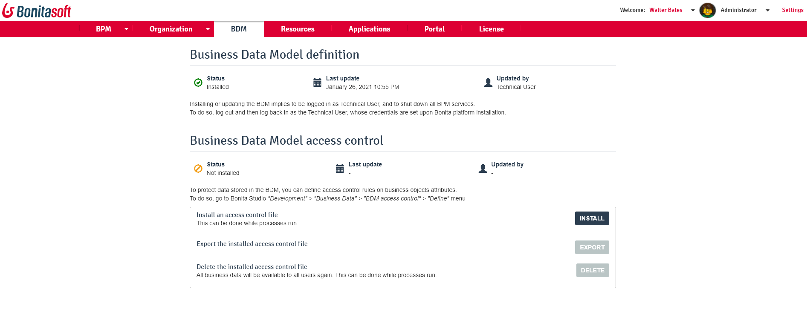

Business Data Management
This page explains what a user with the Administrator profile in Bonita Portal or in the Bonita Administrator Application can see and do about Business Data Model (BDM) and BDM Access Control.
Processes using Business Objects with persisted data need to run with a Business Data Model deployed in Bonita Portal.
On top of that, it is possible to define access rights on some attributes of business objects based on the user profile. This file is also managed in Bonita Portal.
Here is a view of the page: 
Manage the BDM
WARNING: Only one model can be deployed at a time in Bonita Portal, so make sure it contains the Business Object definitions used in all processes that will run within this tenant. The Business Objects must match the structure used by the deployed processes. Make sure that when modifying the Business Data Model, the processes are modified accordingly.
NOTE: The deployment of a Business Data Model requires pausing the service during the operation, so that the update can be performed without affecting ongoing processes. For Enterprise, Efficiency and Performance editions, you must have no access control file installed in order to be able to install or update the Business Data Model.
To do so:
-
Log in as the technical user (default login 'install', default password 'install', or refer to the internal documentation if modified as it should be).
-
Go to the BPM Services menu.
-
Click on the Pause button to pause the tenant.
Then, you can install or update the BDM.
WARNING:
Please note that existing business database tables will be modified definitively. This action cannot be reversed.
-
It is highly recommended to back up the database before proceeding.
-
Export the Business Data Model from Bonita Studio where it was designed.
-
Go to the BDM menu.
-
Click on the Install button
-
Choose the file containing the Business Data Model exported from Bonita Studio
-
Click on the Install button in the popup.
-
A warning is displayed: WARNING: :fa-exclamation-triangle: Warning: The Business Data Model will now be installed.
Bonita Portal will load the file, retrieve the object definitions and enable processes to use them at runtime.
It will also create or update the database schema (set of tables, columns, indexes…) in the business database, so as to store business objects appropriately when modified by processes.
The Business Data Model will now be installed. BPM services can be resumed.
To do so:
. Go to the BPM Services menu.
. Click on the Resume button to resume tenant activity.
WARNING: :fa-exclamation-triangle: Warning: Since business continually evolves, you may need to make some changes to a BDM already in production. Bonita uses Hibernate for data persistence, therefore some changes are handled well, like adding new objects or attributes, but some others, like changing the type of an attribute or defining a unique constraint, we cannot guarantee so far. In such cases, you will have to implement the change on your own, through careful actions in a staging environment, and after the backup of your database. This limitation is well known and will be addressed in a future Bonita version.
Manage BDM Access Control
NOTE: Note: For Enterprise, Performance, and Efficiency editions only.
It is possible to define BDM Access Control rules in Bonita Studio and import them in Bonita Portal.
The Access Control rules must match the Business Data model.
NOTE: :fa-info-circle: Note: Contrary to the BDM definition, the deployment of a BDM Access Control file does not require pausing the BPM services during the operation.
-
Export the BDM Access Control file from Bonita Studio where it was designed.
-
In Bonita Portal, log in as a user with the Administrator profile, or as the Technical user
-
Go to the BDM menu
-
Click on the Install button to open install popup
-
Choose the file containing the BDM Access Control definition exported from Bonita Studio
-
Click on the Install button
-
A successful import message will be displayed.
Please note that a delay is required after the installation, for Bonita Engine to process the access control and for the filtering to be effective.